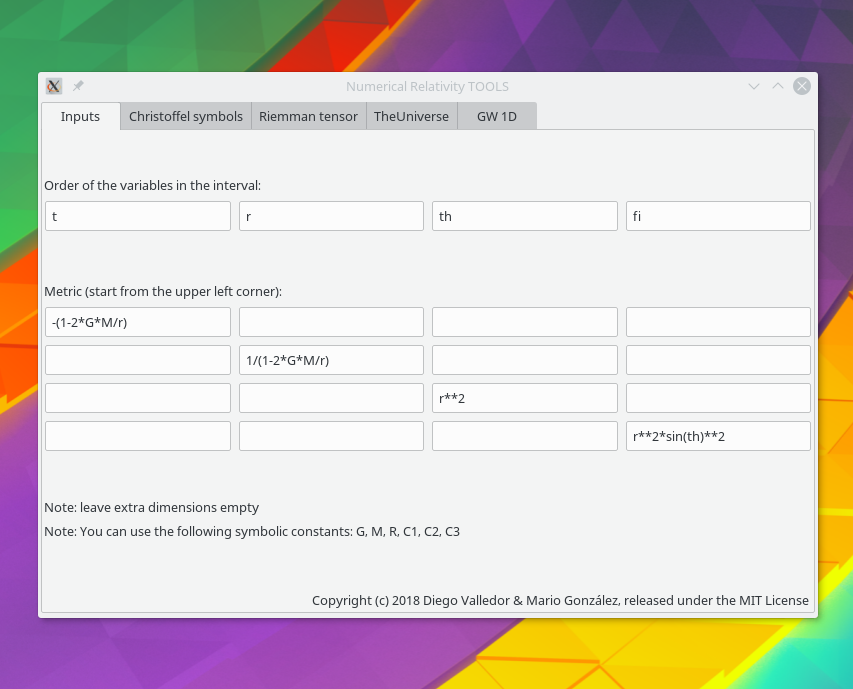

NumericalRelativity 
1.4
1. Numerical Relativity
2. Tutorials
2.1. Inside the interface
2.2. Outside the interface
2.3. A gravitational pulse in a 2-dimensional simplified space-time(t,x)
NumericalRelativity
Docs
»
2. Tutorials
View page source
2. Tutorials
¶
2.1. Inside the interface
2.1.1. The
Inputs
tab
2.1.2. The
Christoffel symbols
tab
2.1.3. The
Riemann tensor
tab
2.1.4.
TheUniverse
tab
2.1.5.
GW 1D
tab
2.2. Outside the interface
2.2.1. christ.py
2.2.2. riem.py
2.2.3. newtonMulti.py
2.2.4. einsteinMulti.cpp
2.2.5. mercury.py
2.2.6. simulFromData.py
2.3. A gravitational pulse in a 2-dimensional simplified space-time(t,x)
2.3.1. Modules
2.3.2.
Subroutines
2.3.3.
Installation guide